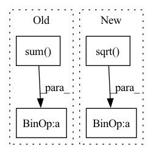

Pattern ID :32906
Before Change
logits = _dict["logits"]
vloss1 = tinners[:, neuron].sum()
vloss2 = tinners.sum() - vloss1
tvloss = total_variation(mark)
mask_loss = mask.sum()After Change
if use_mask:
mask_loss = mask.sum()
mask_nz = len(mask.nonzero())
if (self.count_mask and mask_nz > (math.sqrt( self.max_troj_size) + 2)**2) \
or (not self.count_mask and mask_loss > 100):
mask_loss *= 2 * self.remask_weight
elif (self.count_mask and mask_nz > self.max_troj_size) \In pattern: SUPERPATTERN
Frequency: 3
Non-data size: 4
Instances Fragment ID: 95425873
Project Name: ain-soph/trojanzoo
Commit Name: 1684c28ef38502abb83d37beb845b69007e33274
Time: 2020-07-07
Author: ain-soph@live.com
File Name: trojanzoo/defense/backdoor/abs.py
M Class Name: ABS
N Class Name: ABS
M Method Name: abs_loss(7)
N Method Name: abs_loss(7)
M Parent Class: Defense_Backdoor
N Parent Class: Defense_Backdoor
M File Name: trojanzoo/defense/backdoor/abs.py
N File Name: trojanzoo/defense/backdoor/abs.py
M Start Line: 231
M End Line: 252
N Start Line: 260
N End Line: 283
Before Change
residual_input, residual_target = mixture - input, mixture - target
residual_target_power = torch.sum(residual_target**2, dim=-1)
loss_residual = torch.sum(residual_target * residual_input, dim=-1) / (torch.sum( residual_target**2, dim=-1) * torch.sum(residual_input**2, dim=-1) + eps)
rho = target_power / (target_power + residual_target_power + eps)
After Change
residual_input, residual_target = mixture - input, mixture - target
residual_input_power, residual_target_power = torch.sum(residual_input**2, dim=-1), torch.sum(residual_target**2, dim=-1)
loss_residual = (torch.sum(residual_target * residual_input, dim=-1) + eps) / (torch.sqrt(residual_target_power) * torch.sqrt(residual_input_power) + eps)
rho = (target_power + eps) / (target_power + residual_target_power + eps)
loss = rho * loss + (1 - rho) * loss_residual Fragment ID: 95425889
Project Name: tky823/dnn-based_source_separation
Commit Name: dcf6e26a1386353351222e51e48db60b953fade7
Time: 2021-10-29
Author: delta9guitar97@gmail.com
File Name: src/criterion/sdr.py
M Class Name: AnonimousClass
N Class Name: AnonimousClass
M Method Name: weighted_sdr(4)
N Method Name: weighted_sdr(4)
M Parent Class:
N Parent Class:
M File Name: src/criterion/sdr.py
N File Name: src/criterion/sdr.py
M Start Line: 247
M End Line: 254
N Start Line: 247
N End Line: 254
Before Change
if is_inference:
return - torch.abs(h_embs + r_embs - t_embs)
else:
return - torch.sum(torch.abs(h_embs + r_embs - t_embs))
def predict(self, triples):
After Change
reduced_sum_res = torch.sum(square_res, 1)
// Take the square root element wise
sqrt_res = torch.sqrt( reduced_sum_res)
// The scores are the negative distane
distances = -sqrt_res
return distances
def predict(self, triples): Fragment ID: 95425892
Project Name: pykeen/pykeen
Commit Name: c6c04454d54619121c5eb70ea97f9d6b6068cd7d
Time: 2018-08-17
Author: ali-mehdi@live.de
File Name: src/kg_embeddings_model/trans_e.py
M Class Name: TransE
N Class Name: TransE
M Method Name: compute_score(4)
N Method Name: compute_score(5)
M Parent Class: nn.Module
N Parent Class: nn.Module
M File Name: src/kg_embeddings_model/trans_e.py
N File Name: src/kg_embeddings_model/trans_e.py
M Start Line: 49
M End Line: 66
N Start Line: 59
N End Line: 70